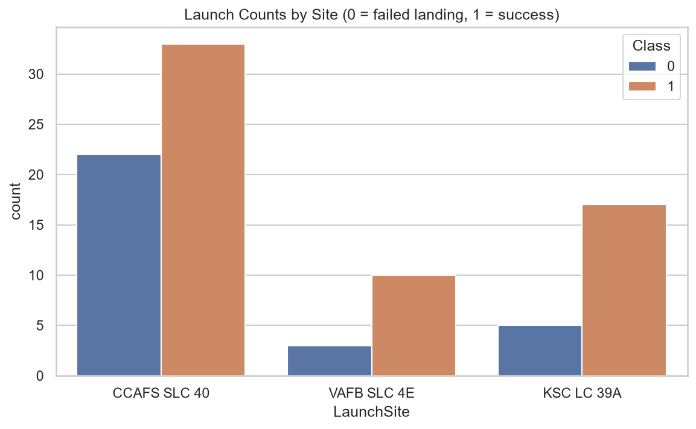
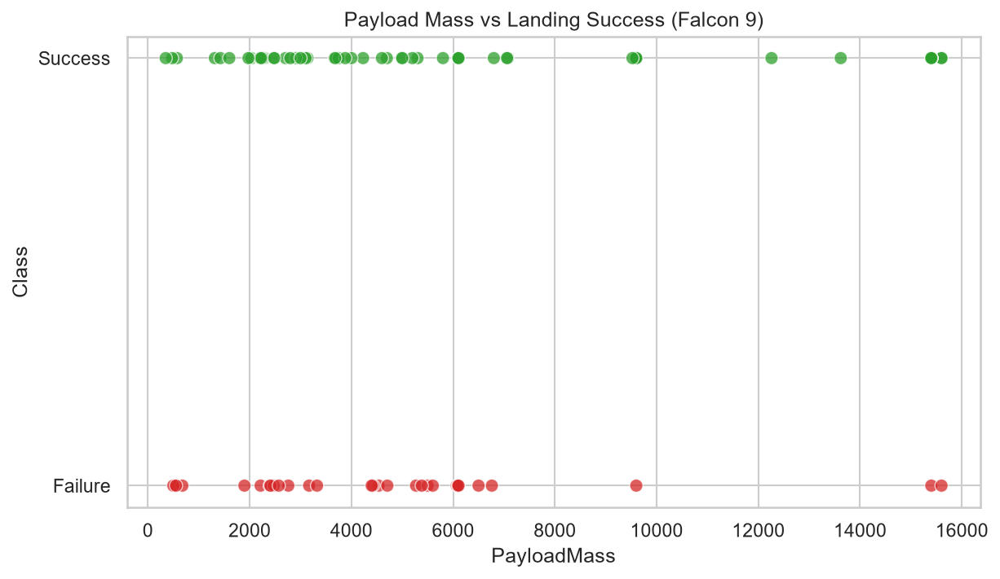
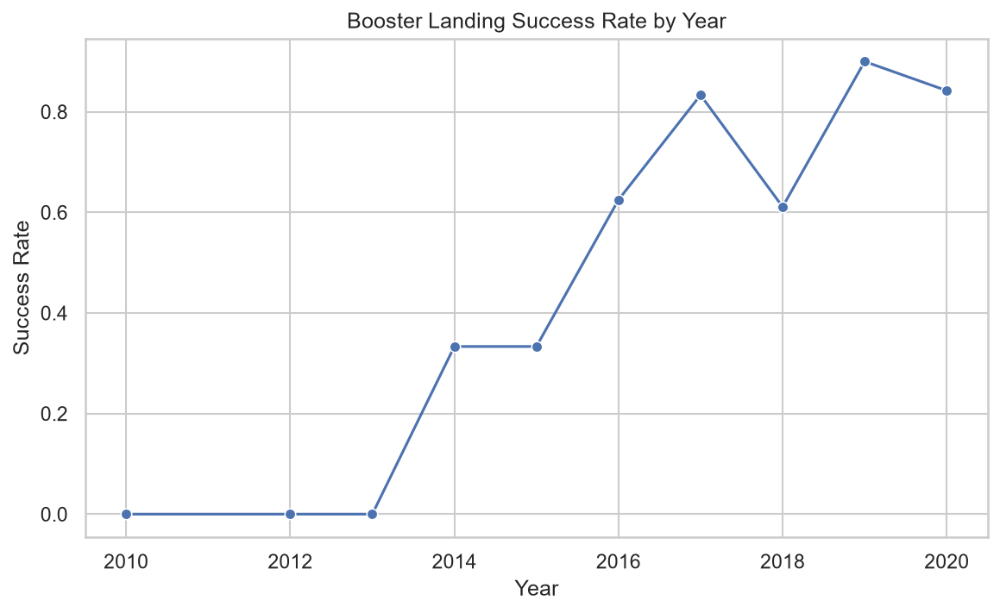
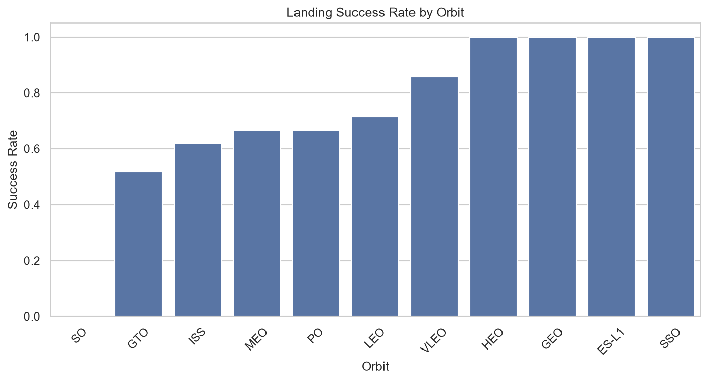
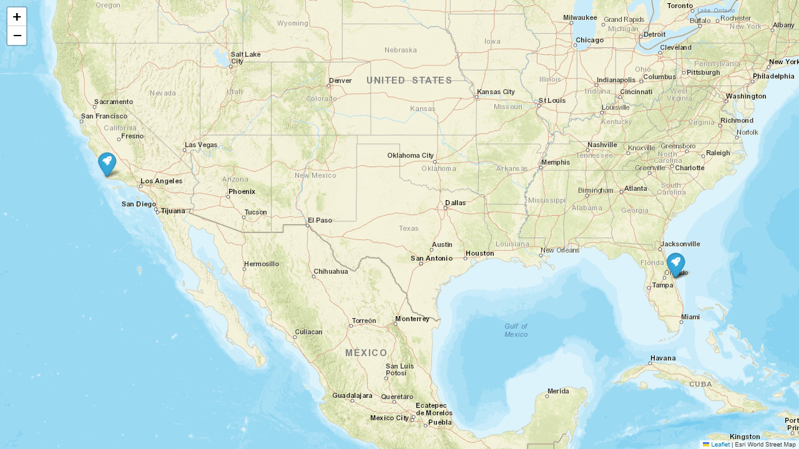
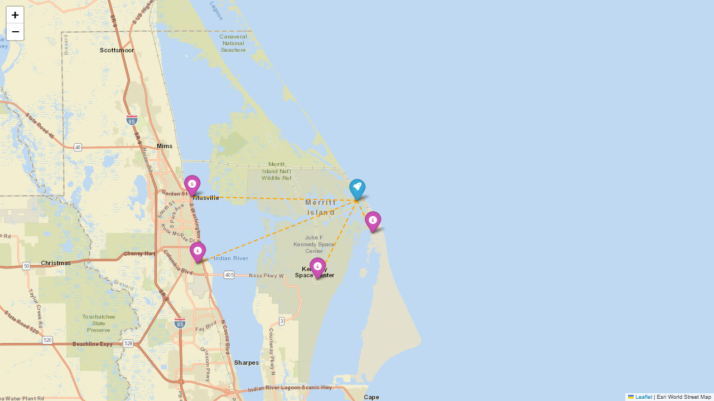
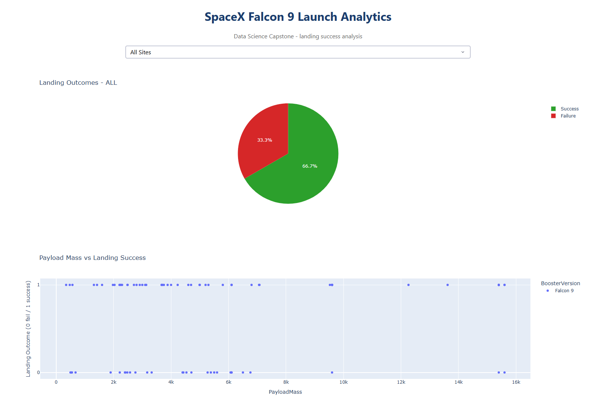
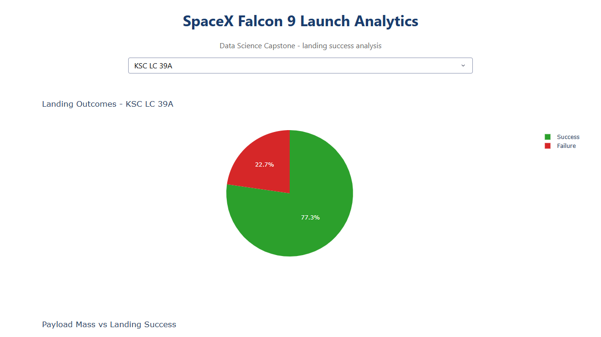
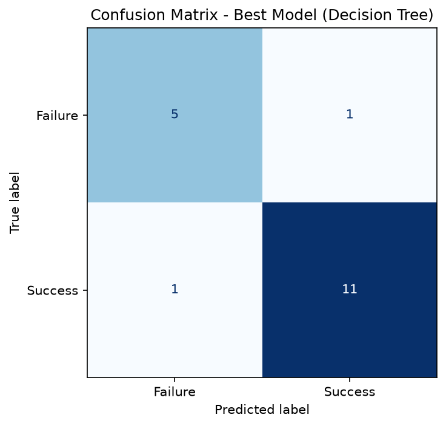

方法管线：SpaceX API 数据收集 → 网络爬虫交叉验证 → 数据清洗（标签工程 + 独热编码）→ EDA 可视化 → SQL 分析 → Folium 地图 / Plotly Dash 交互看板 → 多模型分类预测。
核心问题：能否以可量化的特征预测一级火箭回收成功？回收成功使单次发射成本从约 \$2.83 亿（新火箭）降至约 \$0.62 亿。
关键结果：
背景。SpaceX 以「火箭重复使用」颠覆了航天发射经济学。Falcon 9 的一级火箭可返回地面/海上平台并再次飞行，这是其报价远低于传统一次性火箭的根本原因。
问题陈述。如果能够根据发射参数（载荷质量、轨道类型、发射场、箭体状态等）预测一级火箭能否成功回收，就可以：
数据科学框架。将其建模为二分类问题：
Class 1 = 着陆成功 | Class 0 = 着陆失败
数据来源：SpaceX REST API v4（发射、火箭、着陆场、载荷四个端点），辅以网页爬虫获取公开发射列表交叉验证。
时间跨度：2010–2020 年 Falcon 9 全部 90 次发射（含着陆尝试期完整数据）。
/launches/query 发送 JSON 查询体，分页拉取全部发射，并 populate 关联的 rocket / launchpad / payloads / cores.landpad。landing_attempt + landing_success 派生。
1. 标签工程
Outcome（如 True ASDS / False Ocean / None None）→ 二分类标签 Class（1 成功 / 0 失败），并生成 LandingAttempt 标记。2. 缺失值处理
3. 类型与日期
4. 特征编码
输出：
dataset_part_2.csv：带标签清洗数据（90×20）dataset_part_3.csv：机器学习特征矩阵（90×82）


发现：成功率从 2013 年的 0% 提升至 2019–2020 年的 84–90%；重载荷（>10t，VLEO/Starlink）同样能高概率回收；复用次数增加未显著降低成功率。
清洗数据载入 SQLite（SPACEXTBL），执行 8 组查询，覆盖发射场、有效载荷、成功率、排名、时间维度：
完整查询与结果：sql/sql_results.txt（8 组查询）


| 地标 | 距离 |
|---|---|
| 海岸线（最近） | 10.57 km |
| 铁路 | 4.33 km |
| 公路 FL-401 | 20.59 km |
| 最近城市 Titusville | 19.87 km |
发射记录地图（launch_records_map.html）以绿/红圆点标出每次发射与着陆结果；邻近分析显示发射场紧邻海岸与铁路——火箭运输与海上回收驳船部署的关键区位优势。


python scripts/07_dash_app.py → http://127.0.0.1:8050（上方为应用成功运行的截图）。| 模型 | 最佳 CV | 测试准确率 | 关键超参数 |
|---|---|---|---|
| 决策树（最佳） | 0.807 | 0.889 | entropy, max_depth=2 |
| SVM (RBF) | 0.846 | 0.833 | C=10, gamma=scale |
| KNN | 0.861 | 0.833 | k=7, distance |
| 逻辑回归 | 0.804 | 0.778 | C=10, L2 |
| 随机森林（附加） | 0.779 | 0.778 | 300 棵树 |
方法：80/20 分层划分 + StandardScaler + 10 折交叉验证 GridSearchCV 调参。

最佳模型解释。max_depth=2 的决策树以 88.9% 测试准确率胜出，且仅用 2–3 个关键特征即可达到高精度，说明回收成败由少数强特征主导（箭体版本/复用状态、轨道、发射场）。树结构可解释、可审计，适合安全相关决策。
结论。
创新性 / 创造性见解。
GitHub 仓库（含全部代码、数据、图表）
仓库结构
一键复现
技术栈：Python · pandas · requests · BeautifulSoup · SQLite · Folium · Plotly Dash · scikit-learn